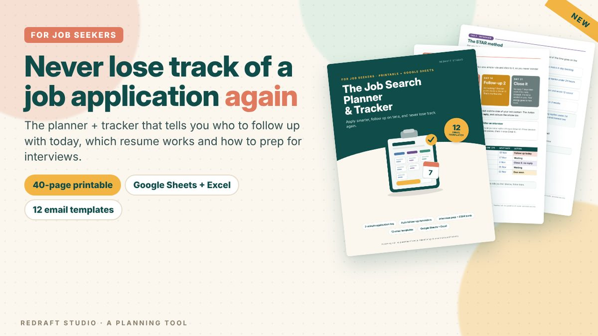
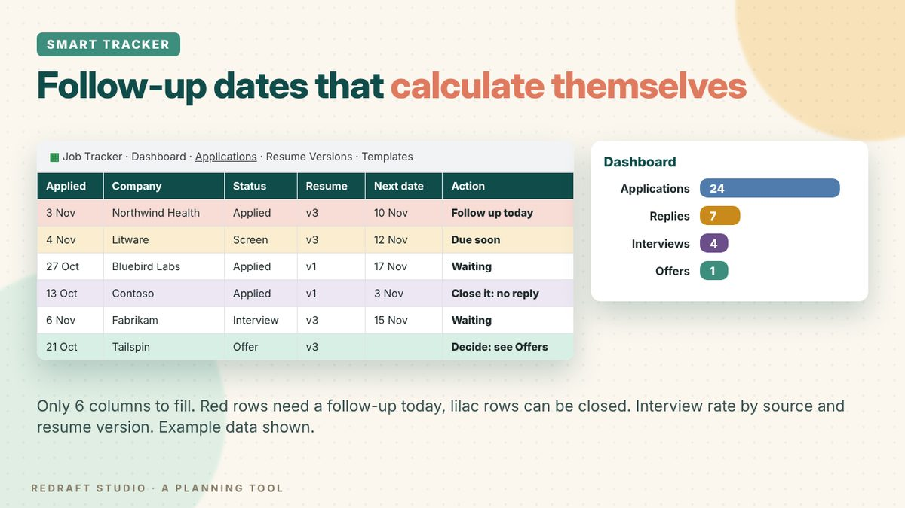
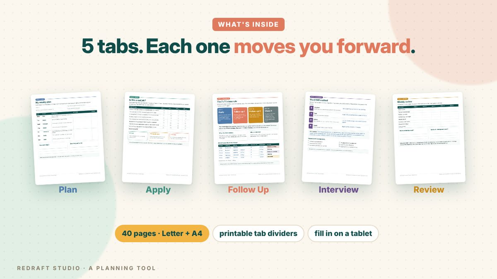
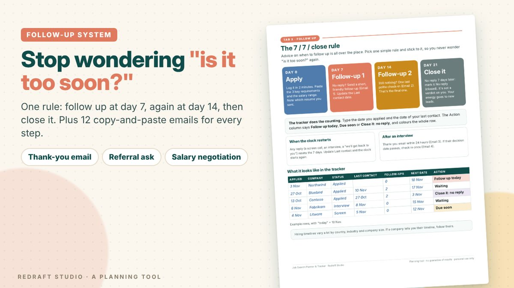
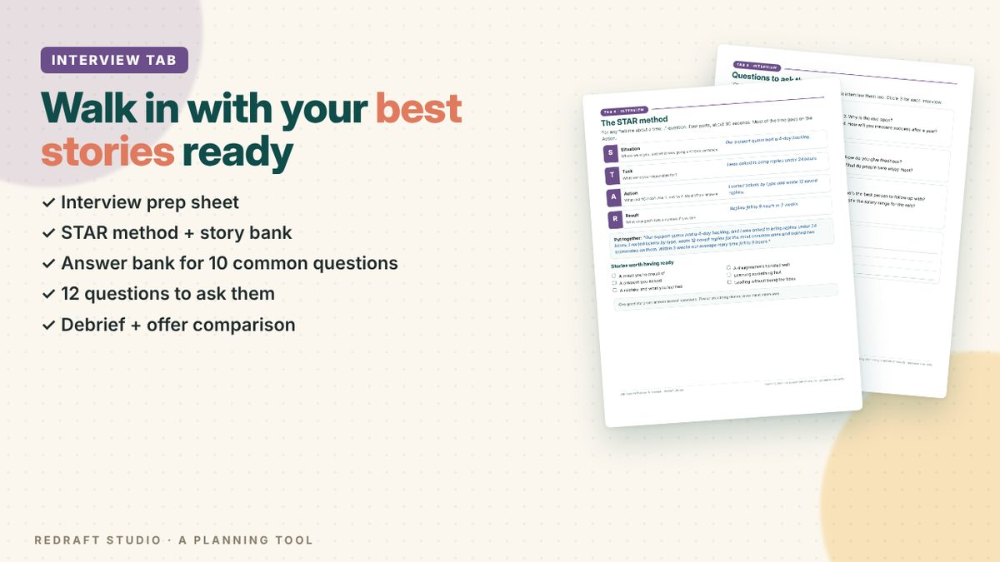
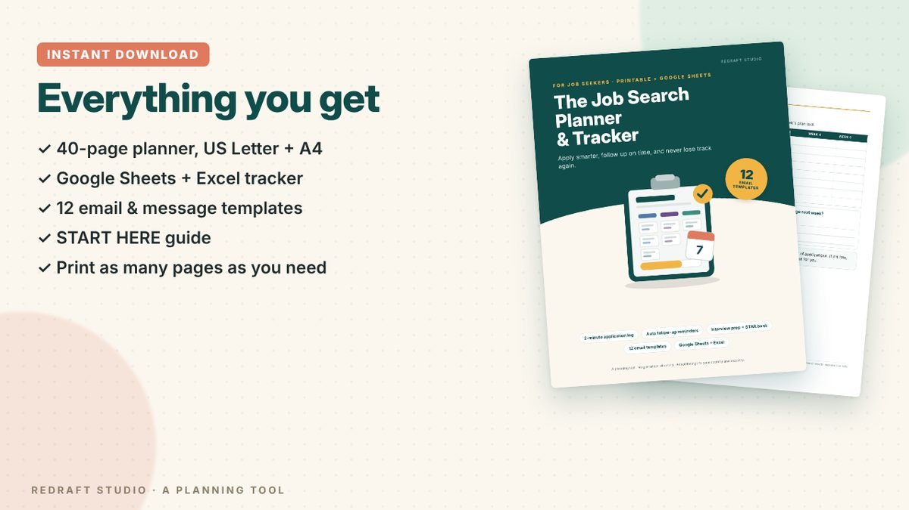

Job Search Planner & Application Tracker
A printable planner and Google Sheets tracker that works out your follow-ups for you.
Instant download. Pay once, print as often as you like.

Never lose track of a job application again.
Most job trackers get abandoned within weeks: too many columns, no reminders, and no idea what's working. This planner is built the other way round: log less, act more.
What makes it different
- A 2-minute application log. Six columns to fill. Everything else is optional.
- Follow-ups that calculate themselves. Type the date you applied. The tracker works out when to follow up, colours the rows that need action today and lists them on the Dashboard.
- One simple follow-up rule. Day 7, day 14, then close it. No more "is it too soon?"
- Know which resume you sent. Name every version, and see which one gets interviews.
- See what's working. Interview rate by source (LinkedIn, referrals, company sites...) and by resume version.
- Interview-ready. Prep sheet, STAR story bank, answer bank and 12 questions to ask them.
- Built so you don't burn out. A weekly plan with an hours cap, a 15-minute weekly review and a reset page for ghosting.
What's inside
40-page printable planner (US Letter + A4)
- Plan: what I'm looking for, 30-second pitch, target companies, weekly plan, daily focus pages
- Apply: "Is this a real job?" 8-point check, tailor in 15 minutes, Job snapshot cards, 2-minute application log, resume version library
- Follow Up: the 7 / 7 / close rule, follow-up tracker, 12 email and message templates, networking log
- Interview: prep sheet, STAR method + story bank, answer bank, questions to ask, debrief, offer comparison
- Review: weekly review, what's working (by source and resume), ghosted reset page, energy check-in and wins log
Google Sheets + Excel tracker (10 tabs)
Dashboard · Applications · Resume Versions · Interviews · Contacts · Weekly Review · STAR Stories · Templates · Offers. Example rows show every tab working; delete them when you start.
12 templates: follow-up after applying, final check-in, thank-you after an interview, post-interview check-in, referral ask, informational chat, message to a hiring manager, reply to a recruiter, feedback after a no, time to decide on an offer, salary negotiation, withdraw politely.
Built from what job seekers said wasn't working
We read what people say about job search trackers and planners. The common complaints: trackers with too many columns, forgotten follow-ups, "which resume did I send?", no idea what's working, and the exhaustion of ghosting. This is the second, better draft.
FAQ
Do I need Google Sheets?
No. You also get an Excel file, and every page prints. Google Sheets is free if you'd like the tracker on your phone.
Does it work outside the US?
Yes. It comes in US Letter and A4, and the timings are easy to adapt to your country and industry.
I've already applied to lots of jobs. Is it too late?
No. Log the last 30 days and close the rest. The tracker shows what needs a follow-up today.
Will this get me a job?
No planner can promise that. It keeps your search organized, helps you follow up on time and shows you what's working, so your effort goes where it counts.
Can I print it more than once?
Yes. Print as many pages as you need for your own search.
Made by Redraft Studio. Instant download. A planning tool; no guarantee of results.





Not sure yet? Start with the free kit.
Free Job Application Follow-Up Kit: a few pages from the same system, free to download and print.
Download the free kit